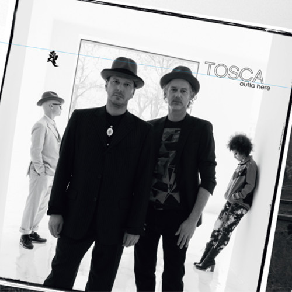

Tosca - Outta here
Geplaatst door: Erick_Perick op September 5, 2014
Genre: dance
Voor de zevende studioplaat besloot Tosca, een elektronisch downtempo-duo uit Wenen, het eens over een iets andere boeg te gooien. Zo valt gelijk de snelle release al op. Voorheen duurde het meestal drie à vier jaar alvorens Rupert Huber en Richard Dorfmeister weer iets nieuws van zich lieten horen. Ditmaal slechts anderhalf jaar. Daarnaast is dit ook een ‘snellere’ plaat geworden. Kenmerkten de vorige platen zich door slome beats, luie grooves en een lounge-achtige sfeer, nu is heel nadrukkelijk gekozen voor tracks met een dwingender beat. De nummers klinken daardoor strakker en energieker dan we gewend waren van Tosca. Verder treden de gastvocalisten ditmaal echt op de voorgrond.
De nummers klinken daardoor strakker en energieker dan we gewend waren van Tosca.
Daartoe werden Earl Zinger en Cath Coffey (Stereo MC’s) aangetrokken. Door dit alles klinkt deze Tosca net even anders dan anders. Maar tegelijk ook nog vertrouwd Toscaiaans, want het sensuele laidback-sfeertje is er nog steeds.
Tracklist:
- Harry dean
- Outta here
- Crazy love
- Have some fun
- H.D.A.
- Prysock
- My sweet monday
- Swimswimswim
- Schopsca
- Put it on
- Kickin it down
- Lone ranger
- Open sky
- Happy hour